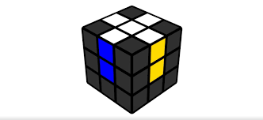
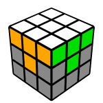
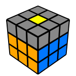
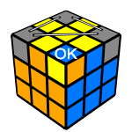
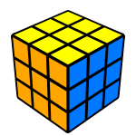

This website can show you how to solve a Rubik's Cube so you can impress your friends with your geekiness.
Turn your cube so that yellow is at the top and red is facing you. These are the moves.
Here are some shortcut moves that are very important to cubing.
Move Name
Move Notation
Sexy Move(I didn't make this name up)
R U R' U'
Back Sexy
L' U' L U
Right Sledgehammer
R' F R F'
Left Sledgehammer
L F' L' F
1. Extended Cross

The extended cross is when you solve the white cross and match the sides to the corrosponding centers. It is the first step to solving a cube. This step requires a lot more thinking than the other steps.
To make the extended cross the beginner way, first solve the white cross. There are too many possible cases of the cross to describe. Just try some moves and you will eventually find a pattern. Make sure you solve the white cross on the bottom.
1. After you complete the white cross, move every white edge to the yellow center with this algorithm: F2 y F2 y F2 y F2.
2. Match the non-white part of a white edge to the center with the same color. Do this with any number of U moves. After you match one edge, turn the cube so that the edge is facing you, and do F2. Repeat this step with every edge.
Congratulations! You have completed the extended cross.
2. First Layer

The first layer is the second step to solving a Rubik's Cube. There's only one algorithm to memorize.
Place a corner with white on it on top of the slot it should be placed in. Turn the cube so that the white side is on the bottom and the slot is on the right. Then, do the sexy move until the corner is in the correct place, and oriented correctly. Repeat this step with all four corners.
Congratulations! You have completed the first layer.
3. Second Layer

The second layer is the third step in solving a Rubik's Cube. You have to memorize 3 algorithms.
1. Place a edge that does not have yellow or white on it so that one side is connected to the center of the same color as the side.
2. If the edge is at the right of its correct slot and you can solve it with R', turn the cube so that the slot is on the left and the edge is at the top. Then do: U' L' U L, followed by the right sledgehammer.
3. If the edge is at the left of it's correct slot and you can solve it with L, turn the cube so that the slot is on the right and the edge is at the top. Then do: U R U' R', followed by the left sledgehammer.
4. Repeat steps 1-3 for all of the edges that do not have either yellow or white on them.
Congratulations! You have now completed the first two layers.
4. Yellow Cross

The yellow cross is the third to last step of solving a Rubik's Cube. There are a couple more algorithms you need to memorize.
Yellow Line
1. If there is a yellow line on the top of the cube, check to see if the non-yellow colors of the edges are opposite. Two colors are opposite if the centers of the corrosponding colors are on opposite sides of the cube, (blue and green, red and orange, white and yellow). If they are opposites, go to case 4.
2. If they are not, turn the top layer so that one color aligns with the center of the same color. Turn the cube so that that color is on the left side. Check if the other edge that is oriented correctly can move right and go to its correct slot.
3. If it cannot, match that edge to the corrosponding center and turn the cube so that that one is on the left. Then, do this algorithm: F Sexy F'.
4. If the two colors are opposites, turn the top layer so that the yellow line is going pointing to you, and then do this algorithm: F U F' U F U2 R U R' U' F'. This should make the non-yellow parts of the edges in the yellow line not opposites.
L shape
If the top side has a yellow L on it (with the yellow center and 2 yellow edges), then follow these instructions.
1. If the non-yellow colors on the edges that are oriented correctly are opposites, turn the cube so that the L edges are facing toward you and toward the right, and preform this algorithm: F Sexy F. Then, the yellow edges on top should be positioned as a line.
2. If the non-yellow colors on the edges that are oriented correctly are not opposites, turn the cube so that the L edges are facing toward you and toward the right, and preform this algorithm: F' U' F U' F' U2 F. This should make a yellow line on top.
Dot
If the top side doesn't have any edges oriented correctly, preform this algorithm: F Sexy F. This should give you a L shape.
Congratulations! You have solved the yellow cross.
5. Yellow Layer Corners
This step is the second to last step to solving a Rubik's Cube. During this step, You will move the yellow corners to it's correct places.
1. If there is one corner already in the correct spot(it does not have to be oriented correctly), rotate the cube so that that corner is on the left side. Then, preform this algorithm until every corner is in the correct spot: R U' L' U R' U' L
2. If there is no corner in the correct spot, then preform the previous algorithm untill one corner is in the correct spot. Then follow the instructions from case 1.
Congratulations! You have completed the corners of the last layer.
6. Final Layer

This is the final step to solve a Rubik's Cube. During this step, you orient the corners of the last layer.
1. Choose a unsolved corner. Rotate the cube until the white side is on the top, and do sexy moves until the corner is solved. This seems to mess the rest of the cube up, but don't worry! Move the D layer until another unsolved corner is in the spot. Then do Sexy moves until that corner is solved. Do this wit every unsolved corner. After this step, the cube will be solved, even though you messed it up!
Now PRACTICE PRACTICE PRACTICE PRACTICE PRACTICE PRACTICE PRACTICE PRACTICE PRACTICE PRACTICE PRACTICE PRACTICE PRACTICE PRACTICE PRACTICE PRACTICE PRACTICE PRACTICE PRACTICE PRACTICE PRACTICE PRACTICE PRACTICE PRACTICE PRACTICE PRACTICE PRACTICE PRACTICE PRACTICE PRACTICE PRACTICE PRACTICE PRACTICE PRACTICE PRACTICE PRACTICE PRACTICE PRACTICE PRACTICE PRACTICE PRACTICE PRACTICE PRACTICE PRACTICE PRACTICE PRACTICE PRACTICE PRACTICE PRACTICE PRACTICE PRACTICE PRACTICE PRACTICE PRACTICE PRACTICE PRACTICE PRACTICE PRACTICE PRACTICE PRACTICE PRACTICE PRACTICE PRACTICE PRACTICE PRACTICE PRACTICE PRACTICE PRACTICE PRACTICE PRACTICE PRACTICE PRACTICE PRACTICE PRACTICE PRACTICE PRACTICE PRACTICE PRACTICE PRACTICE PRACTICE PRACTICE PRACTICE PRACTICE PRACTICE PRACTICE PRACTICE PRACTICE PRACTICE PRACTICE PRACTICE PRACTICE PRACTICE PRACTICE PRACTICE PRACTICE PRACTICE PRACTICE PRACTICE PRACTICE PRACTICE PRACTICE PRACTICE PRACTICE PRACTICE PRACTICE PRACTICE PRACTICE PRACTICE PRACTICE LEARN PRACTICE PRACTICE PRACTICE PRACTICE PRACTICE PRACTICE PRACTICE PRACTICE PRACTICE PRACTICE PRACTICE PRACTICE PRACTICE PRACTICE PRACTICE PRACTICE PRACTICE PRACTICE PRACTICE PRACTICE PRACTICE PRACTICE PRACTICE PRACTICE PRACTICE PRACTICE PRACTICE PRACTICE PRACTICE PRACTICE PRACTICE PRACTICE PRACTICE PRACTICE PRACTICE PRACTICE PRACTICE PRACTICE PRACTICE PRACTICE PRACTICE PRACTICE PRACTICE PRACTICE PRACTICE PRACTICE PRACTICE PRACTICE PRACTICE PRACTICE PRACTICE PRACTICE PRACTICE PRACTICE PRACTICE PRACTICE PRACTICE PRACTICE PRACTICE PRACTICE PRACTICE PRACTICE PRACTICE PRACTICE PRACTICE PRACTICE PRACTICE PRACTICE PRACTICE PRACTICE PRACTICE PRACTICE PRACTICE PRACTICE PRACTICE PRACTICE PRACTICE PRACTICE PRACTICE PRACTICE PRACTICE PRACTICE PRACTICE PRACTICE PRACTICE PRACTICE PRACTICE PRACTICE PRACTICE PRACTICE PRACTICE PRACTICE PRACTICE PRACTICE PRACTICE PRACTICE PRACTICE PRACTICE PRACTICE PRACTICE PRACTICE PRACTICE PRACTICE PRACTICE PRACTICE PRACTICE PRACTICE PRACTICE PRACTICE PRACTICE PRACTICE PRACTICE PRACTICE PRACTICE PRACTICE PRACTICE PRACTICE PRACTICE PRACTICE PRACTICE PRACTICE!!! If you practice a lot with this method, you might be able to solve a cube in under a minute!